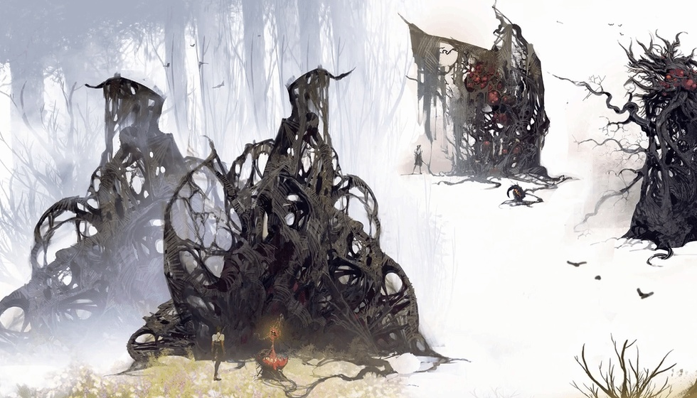

3大知名工作室将被关？Xbox新CEO政策引内部不满
兄弟们，你能接受自己喜欢的《地狱之刃》《脑航员》系列，突然再也出不了新作吗？
最近Xbox内部有消息，可能要让不少玩家慌了——新CEO阿莎·夏尔马搞的一系列激进政策，正被自家员工集体吐槽，甚至有3家知名工作室已经被列上关闭名单。微软Xbox内部重组不是秘密，可这场重组引发的风波，正让Xbox内部争议不断。
这背后是新CEO完全颠覆Xbox传统的管理方式。行业媒体说，阿莎·夏尔马在强行把科技初创公司的文化塞进Xbox，最让员工难受的是决策流程变了：过去要花几周规划的关键战略，现在她要求几小时内就得拿出结果。这种快节奏打破了常规，不少习惯细致打磨游戏的员工适应不了，还担心仓促做决定会影响游戏质量。

开发者更不满的是，阿莎·夏尔马好像不太信资深开发者的经验。有工作室负责人透露，她几乎不听资深游戏开发者的意见，反倒更看重第三方商业顾问的报告，还会盯着普通玩家社区的反应做判断。对开发者来说，自己多年攒下的行业经验被忽略，反而要跟着外部报告和玩家反馈走，这种不被认可的感觉，让很多人心里不是滋味。
政策引发的连锁反应已经传到工作室了。目前被列上关闭名单的3家工作室，分别是做《地狱之刃》的Ninja Theory、做《脑航员》的Double Fine，还有做《午夜以南》的Compulsion Games。这三家有个共同点：开发游戏周期长，作品口碑不错，但市场销量没达到预期，属于“叫好不叫座”的类型。再加上现在Xbox营收压力越来越大，新CEO选择对这些工作室下手，或许也是想靠精简缓解营收困境。
不过，这场大刀阔斧的改革，也有人看出不一样的味道。支持的人觉得，Xbox之前可能效率低、成本高，新CEO这是“沉疴下猛药”，虽然激进，但能帮Xbox快速调整方向；反对的人则认为，游戏开发有特殊性，资深开发者的经验是保证游戏质量的关键，忽视他们的意见，只看数据和玩家反馈，最后可能会毁掉Xbox的游戏口碑。
一边是Xbox的营收压力，一边是玩家对经典IP的不舍；一边是新CEO“猛药治沉疴”的改革，一边是资深开发者被冷落的无奈。其实游戏行业从来没有绝对的对与错，最终买单的还是我们这些玩家——你觉得Xbox新CEO的政策能救得了Xbox吗？如果《地狱之刃》系列真的停更，你会觉得可惜吗？评论区说说你的看法！
关于我们
📱 公众号名称：三天游戏
✍️ 作者：曾三天
扫码关注公众号，获取每日最新资讯

商务合作与版权
商务合作 / 内容投稿 / 品牌推广
请关注公众号「三天游戏」后台留言联系
版权声明：本文由作者整理，转载需注明出处。